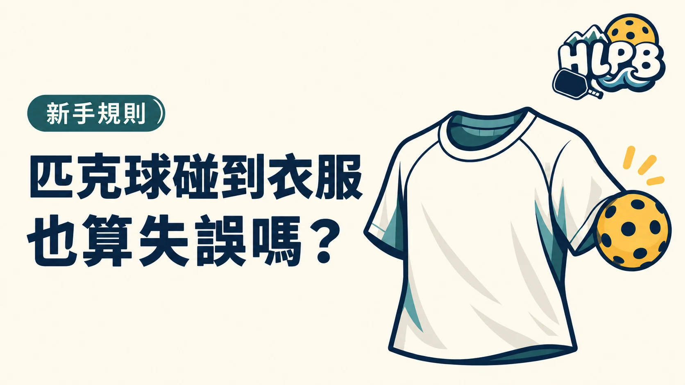

仍在對打中的球碰到身上衣物，也屬於觸球失誤，不是只有碰到皮膚才算。判斷重點是球當時是否仍在回合中，以及碰到的是什麼部位或穿戴物。
不同接觸，別混用同一個答案
| 接觸情形 | 要核對的重點 |
|---|---|
| 球碰到身體或穿戴衣物 | 依身體觸球規定判斷 |
| 球碰到球拍 | 屬球拍擊球的範圍，仍看其他規則 |
| 球碰到持拍手 | 另核對手腕以下及持拍狀態的例外 |
衣服是否寬鬆、是否碰到皮膚，不是把衣物接觸改成沒有接觸的理由。持拍手的例外也不能延伸成整條手臂或袖子都不算。
球看起來會出界，為什麼還不能接？
球還沒有落地，不能把預測中的界外當成已發生的結果。若先碰到自己或衣物，就已經產生另一個規則問題，不會因原本覺得它可能出界而自動取消。
判定時，先描述實際發生什麼
HLPB 建議先確認接觸時間與位置，再查規則；不要只說球太長或我沒有用力碰。若接觸已發生，討論的是這次接觸的規定，而不是球原本可能飛到哪裡。
本文整理發球之後的對打情形。發球直接碰到接發球員或搭檔的規定，應另查發球章節，不把所有接觸都套成同一種判定。
延伸閱讀：匹克球打到持拍手，也算失誤嗎？、匹克球壓線算界內嗎？發球時有一個例外。
資料來源：USA Pickleball 2026 規則書。
內容更新：2026-10-20｜資料來源：USA Pickleball 官方資料
返回文章列表